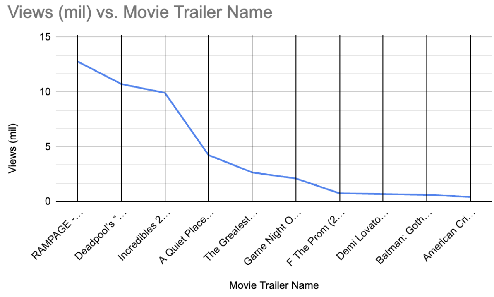
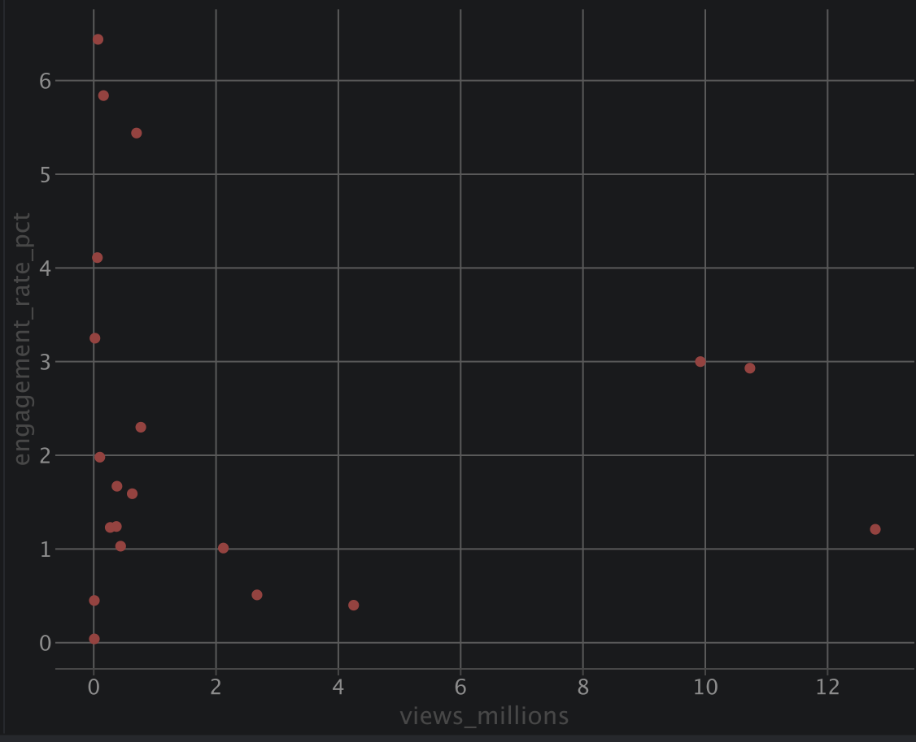
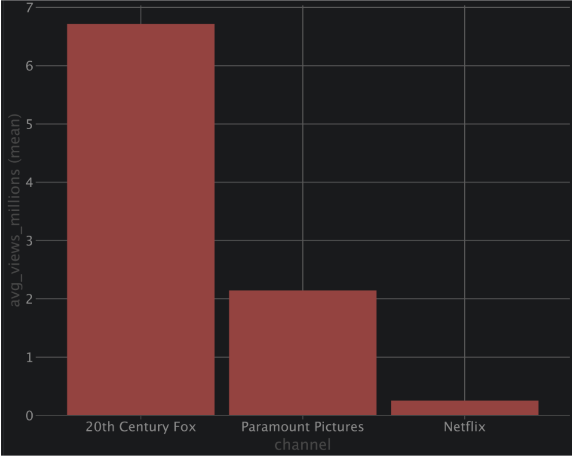

Explore the data
Analytics
Each section pairs a data table with charts that answer one research question. The tables and the image charts come from our database query of movie trailers that trended on YouTube in November 2017 (each video counted once, at its highest recorded view count). The interactive charts load live from the class database.
Most-viewed trailers
Which movie trailers generate the most attention on YouTube?
| Trailer | Channel | Views | Trending date |
|---|---|---|---|
| RAMPAGE - OFFICIAL TRAILER 1 [HD] | Warner Bros. Pictures | 12,776,633 | Nov 20, 2017 |
| Deadpool’s “Wet on Wet” Teaser | 20th Century Fox | 10,729,515 | Nov 20, 2017 |
| Incredibles 2 Official Teaser Trailer | Disney•Pixar | 9,920,833 | Nov 20, 2017 |
| A Quiet Place (2018) - Official Teaser Trailer - Paramount Pictures | Paramount Pictures | 4,251,667 | Nov 20, 2017 |
| The Greatest Showman | Official Trailer 2 [HD] | 20th Century FOX | 20th Century Fox | 2,671,756 | Nov 15, 2017 |
| Game Night Official Trailer #1 (2018) Rachel McAdams, Jason Bateman Comedy Movie HD | Zero Media | 2,122,489 | Nov 16, 2017 |
| F The Prom (2017) | Official Trailer HD | The Orchard Movies | 766,661 | Nov 19, 2017 |
| Batman: Gotham by Gaslight - Exclusive Trailer (2018) | IGN | 629,166 | Nov 17, 2017 |
| Dark | Official Trailer [HD] | Netflix | Netflix | 378,750 | Nov 14, 2017 |
| THE SHAPE OF WATER - Final Trailer | FoxSearchlight | 366,814 | Nov 15, 2017 |

Rampage drew the largest audience, with about 12.8 million views, followed by Deadpool at 10.7 million and Incredibles 2 at 9.9 million. These three trailers far outperformed the rest of the sample.
Loading chart…
Views and engagement
Do trailers with more views necessarily have higher audience engagement?
| Trailer | Views | Likes | Comments | Engagement (%) |
|---|---|---|---|---|
| RAMPAGE - OFFICIAL TRAILER 1 [HD] | 12,776,633 | 130,537 | 24,010 | 1.21 |
| Deadpool’s “Wet on Wet” Teaser | 10,729,515 | 300,465 | 13,980 | 2.93 |
| Incredibles 2 Official Teaser Trailer | 9,920,833 | 262,448 | 35,134 | 3.00 |
| A Quiet Place (2018) - Official Teaser Trailer - Paramount Pictures | 4,251,667 | 14,290 | 2,600 | 0.40 |
| The Greatest Showman | Official Trailer 2 [HD] | 20th Century FOX | 2,671,756 | 12,699 | 1,010 | 0.51 |
| Game Night Official Trailer #1 (2018) Rachel McAdams, Jason Bateman Comedy Movie HD | 2,122,489 | 20,085 | 1,321 | 1.01 |
| F The Prom (2017) | Official Trailer HD | 766,661 | 16,842 | 767 | 2.30 |
| Batman: Gotham by Gaslight - Exclusive Trailer (2018) | 629,166 | 8,985 | 1,030 | 1.59 |
| Dark | Official Trailer [HD] | Netflix | 378,750 | 5,642 | 675 | 1.67 |
| THE SHAPE OF WATER - Final Trailer | 366,814 | 4,099 | 449 | 1.24 |
| H&M Holiday 2017 starring Nicki Minaj – official teaser | 271,685 | 3,330 | 0 | 1.23 |
| A Christmas Prince | Official Trailer [HD] | Netflix | 98,684 | 1,714 | 244 | 1.98 |
| Behind The Curtain - OFFICIAL TRAILER | 69,199 | 4,237 | 220 | 6.44 |
| Deadpool 2 Teaser Released - Movie Talk | 63,818 | 2,080 | 543 | 4.11 |
| Titanic (2017) - Dolby Vision Trailer | 17,129 | 455 | 101 | 3.25 |
| Basmati Blues - Trailer | 12,609 | 40 | 17 | 0.45 |
Engagement rate = (likes + comments) ÷ views × 100.

More views don't mean a bigger share of viewers engage: Rampage had the most views but only a 1.21% engagement rate, compared with 2.93% for Deadpool and 3.00% for Incredibles 2. Views measure reach, while engagement shows how strongly the audience responded.
Loading chart…
Channel performance
Which YouTube channels generate the strongest trailer performance?
| Channel | Trailers in sample | Average views |
|---|---|---|
| 20th Century Fox | 2 | 6,700,635 |
| Paramount Pictures | 2 | 2,134,398 |
| Netflix | 2 | 238,717 |

Among channels with at least two trailers in the sample, 20th Century Fox led with about 6.70 million views per trailer, compared with 2.13 million for Paramount Pictures and 239,000 for Netflix. Each channel had only two videos, so this doesn't establish overall channel performance.
When trending videos are published
Which publish days and hours produce the most trending videos?
Loading chart…